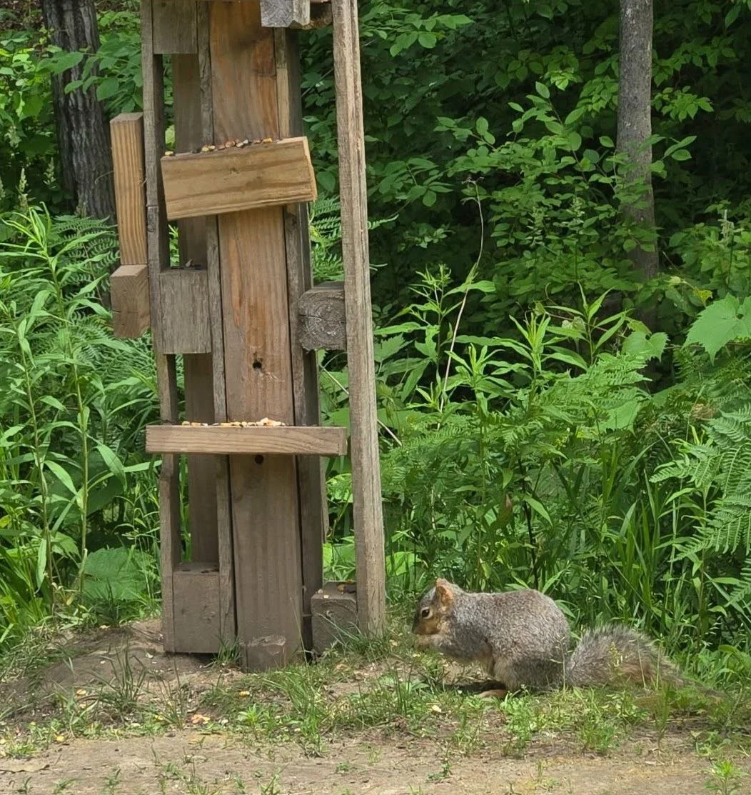

Squirrels.
Chipmunks.
A yard with life.
What to feed squirrels and chipmunks—and what to plant for natural food.
What they eat, what we’ve watched, and why a place to live matters as much as a place to stop for a snack.
Open the field notesDifferent visitors.
Plenty to forage.

Squirrels
Acorns, hickory and walnuts, beechnuts, hazelnuts, seeds, berries, mushrooms, buds and shoots are among their natural foods.
Chipmunks
Seeds, nuts, berries, grains, mushrooms, fallen fruit and occasional insects all appear in a varied diet. What is available varies by place and season.
These are examples of food in a varied natural diet—not a complete menu or feeding ration.
A visitor enjoying a snack
doesn’t settle the whole question.
At our feeding spots, the regulars have gone for seeds, corn and nuts. That is part of our backyard story. It does not prove a balanced diet, a safe portion or a good approach for every yard.
Wildlife agencies caution that feeding mammals can change behavior, concentrate animals and spread disease. Check local wildlife guidance and favor habitat over creating a dependence on handouts.
Read the U.S. Fish & Wildlife Service feeding guidance.What about peanuts, corn and fruit?
Plain nuts and seeds, corn and small fruit pieces belong to our backyard feeding notes. That does not establish a balanced ration or make raw peanuts a universally safe choice. Get species-specific guidance rather than using a snack list as a complete feeding plan.
What should stay out of the feeding area?
Keep salty or flavored snacks, candy, bread, chips, moldy nuts and spoiled leftovers out. Skipping junk food still does not establish that supplemental feeding is appropriate for your situation.
What about an injured or orphaned animal?
Contact a licensed wildlife rehabilitator rather than trying to feed or treat the animal yourself. See the linked wildlife-agency guidance.
Plant for a landscape.
Leave some shelter.
Berries & fruit.
Consider serviceberry, elderberry, mulberry, wild plum, chokecherry, crabapple, raspberries, blackberries or blueberries. Choose species that suit your region and site; the list is not a native-plant certification.
Nuts & cover.
Oak, hickory, black walnut, beech and hazelnut are possibilities to explore. Shrubs, wood edges and log piles can provide shelter too. Think mature size and your actual yard before planting.
Water belongs in the conversation.
Food, water and nearby cover are connected. Manage any shared wildlife resource with local guidance and regular attention; this is not a feeder-hygiene protocol.


One little regular.
A much longer story.
The snack service became part of the cabin rhythm. Meet Chippy in the journal, follow the spring return, and see the old lumber that turned into a playground.
Meet Chippy Follow the spring return See the woodpile playground